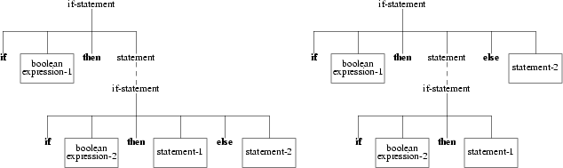

ABSTRACT
Aad Geudeke
Frans Hofmeester
Dept. of Mathematics and Computer Science
Vrije Universiteit
Amsterdam, The Netherlands
This document describes the implementation of a Pascal to EM compiler. The compiler is written in C. The lexical analysis is done using a hand-written lexical analyzer. Semantic analysis makes use of the extended LL(1) parser generator LLgen. Several EM utility modules are used in the compiler.
The Pascal front end of the Amsterdam Compiler Kit (ACK) complies with the requirements of the international standard published by the International Organization for Standardization (ISO) [ISO]. An informal description, which unfortunately is not conforming to the standard, of the programming language Pascal is given in [JEN].
The main reason for rewriting the Pascal compiler was that the old Pascal compiler was written in Pascal itself, and a disadvantage of it was its lack of flexibility. The compiler did not meet the needs of the current ACK-framework, which makes use of modern parsing techniques and utility modules. In this framework it is, for example, possible to use a fast back end. Such a back end translates directly to object code [ACK]. Our compiler is written in C and it is designed similar to the current C and Modula-2 compiler of ACK.
Chapter 2 describes the basic structure of the compiler. Chapter 3 discusses the code generation of the main Pascal constructs. Chapter 4 covers one of the major components of Pascal, viz. the conformant array. In Chapter 5 the various compiler options that can be used are enumerated. The extensions to the standard and the deviations from the standard are listed in Chapter 6 and 7. Chapter 8 presents some ideas to improve the standard. Chapter 9 gives a short overview of testing the compiler. The major differences between the old and new compiler can be found in Chapter 10. Suggestions to improve the compiler are described in Chapter 11. The appendices contain the grammar of Pascal and the changes made to the ACK Pascal run time library. A translation of a Pascal program to EM code as example is presented.
The compiler can be divided roughly into four modules:
• lexical analysis
• syntax analysis
• semantic analysis
• code generation
The four modules are grouped into one pass. The activity
of these modules is interleaved during the pass.
The lexical analyzer, some expression handling routines and
various datastructures from the Modula-2 compiler
contributed to the project.
The first module of the compiler is the lexical
analyzer. In this module, the stream of input characters
making up the source program is grouped into tokens,
as defined in ISO 6.1. The analyzer is hand-written,
because the lexical analyzer generator, which was at our
disposal, Lex [LEX], produces much slower analyzers.
A character table, in the file char.c, is created
using the program tab which takes as input the file
char.tab. In this table each character is placed into
a particular class. The classes, as defined in the file
class.h, represent a set of tokens. The strategy of
the analyzer is as follows: the first character of a new
token is used in a multiway branch to eliminate as many
candidate tokens as possible. Then the remaining characters
of the token are read. The constant INP_NPUSHBACK, defined
in the file input.h, specifies the maximum number of
characters the analyzer looks ahead. The value has to be at
least 3, to handle input sequences such as:
1e+4 (which is a real number)
1e+a (which is the integer 1, followed by the identifier
"e", a plus, and the identifier "a")
Another aspect of this module is the insertion and deletion of tokens required by the parser for the recovery of syntactic errors (see also section 2.2). A generic input module [ACK] is used to avoid the burden of I/O.
The second module of the compiler is the parser, which is the central part of the compiler. It invokes the routines of the other modules. The tokens obtained from the lexical analyzer are grouped into grammatical phrases. These phrases are stored as parse trees and handed over to the next part. The parser is generated using LLgen[LL], a tool for generating an efficient recursive descent parser with no
backtrack from an Extended Context Free Syntax.
An error recovery mechanism is generated almost completely
automatically. A routine called LLmessage had to be
written, which gives the necessary error messages and deals
with the insertion and deletion of tokens. The routine
LLmessage must accept one parameter, whose value is a
token number, zero or -1. A zero parameter indicates that
the current token (the one in the external variable
LLsymb) is deleted. A -1 parameter indicates that the
parser expected end of file, but did not get it. The parser
will then skip tokens until end of file is detected. A
parameter that is a token number (a positive parameter)
indicates that this token is to be inserted in front of the
token currently in LLsymb. Also, care must be taken,
that the token currently in LLsymb is again returned
by the next call to the lexical analyzer, with the
proper attributes. So, the lexical analyzer must have a
facility to push back one token.
Calls to the two standard procedures write and
writeln can be different from calls to other
procedures. The syntax of a write-parameter is different
from the syntax of an actual-parameter. We decided to
include them, together with read and readln,
in the grammar. An alternate solution would be to make the
syntax of an actual-parameter identical to the syntax of a
write-parameter. Afterwards the parameter has to be checked
to see whether it is used properly or not.
As the parser is LL(1), it must always be able to determine what to do, based on the last token read (LLsymb). Unfortunately, this was not the case with the grammar as specified in [ISO]. Two kinds of problems appeared, viz. the alternation and repetition conflict. The examples given in the following paragraphs are taken from the grammar.
An alternation conflict arises when the parser can not
decide which production to choose.
Example:
procedure-declaration : procedure-heading ’;’ directive |
procedure-identification ’;’ procedure-block |
procedure-heading ’;’ procedure-block ;
procedure-heading : procedure identifier [ formal-parameter-list ]? ;
procedure-identification : procedure procedure-identifier ;
|
A sentence that starts with the terminal procedure is derived from the three alternative productions. This conflict can be resolved in two ways: adjusting the grammar, usually some rules are replaced by one rule and more work has to be done in the semantic analysis; using the LLgen conflict resolver, "%if (C-expression)", if the C-expression evaluates to non-zero, the production in question is chosen, otherwise one of the remaining rules is chosen. The grammar rules were rewritten to solve this conflict. The new rules are given below. For more details see the file declar.g.
procedure-declaration : procedure-heading ’;’ ( directive | procedure-block ) ; procedure-heading : procedure identifier [ formal-parameter-list ]? ; |
A special case of an alternation conflict, which is common to many block structured languages, is the "dangling-else" ambiguity.
if-statement : if boolean-expression then statement [ else-part ]? ; else-part : else statement ; |
The following statement that can be derived from the rules above is ambiguous:
|
if boolean-expr-1 then if boolean-expr-2 then statement-1 else statement-2 |

(a) (b)
Two parse trees showing the dangling-else ambiguity
According to the standard, else is matched with the nearest preceding unmatched then, i.e. parse tree (a) is valid (ISO 6.8.3.4). This conflict is statically resolved in LLgen by using "%prefer", which is equivalent in behaviour to "%if(1)".
A repetition conflict arises when the parser can not
decide whether to choose a production once more, or
not.
Example:
field-list : [ ( fixed-part [ ’;’ variant-part ]? | variantpart ) [;]? ]? ; fixed-part : record-section [ ’;’ record-section ]* ; |
When the parser sees the semicolon, it can not decide whether another record-section or a variant-part follows. This conflict can be resolved in two ways: adjusting the grammar or using the conflict resolver, "%while (C-expression)". The grammar rules that deal with this conflict were completely rewritten. For more details, the reader is referred to the file declar.g.
The third module of the compiler is the checking of semantic conventions of ISO-Pascal. To check the program being parsed, actions have been used in LLgen. An action consists of several C-statements, enclosed in brackets "{" and "}". In order to facilitate communication between the actions and LLparse, the parsing routines can be given C-like parameters and local variables. An important part of the semantic analyzer is the symbol table. This table stores all information concerning identifiers and their definitions. Symbol-table lookup and hashing is done by a generic namelist module [ACK]. The parser turns each program construction into a parse tree, which is the major datastructure in the compiler. This parse tree is used to exchange information between various routines.
The final module in the compiler is that of code
generation. The information stored in the parse trees is
used to generate the EM code [EM]. EM code is generated with
the help of a procedural EM-code interface [ACK]. The use of
static exchanges is not desired, since the fast back end can
not cope with static code exchanges, hence the EM
pseudoinstruction exc is never generated.
Chapter 3 discusses the code generation in more detail.
The first three modules have in common that they can detect errors in the Pascal program being compiled. If this is the
case, a proper message is given and some action is performed. If code generation has to be aborted, an error message is given, otherwise a warning is given. The constant MAXERR_LINE, defined in the file errout.h, specifies the maximum number of messages given per line. This can be used to avoid long lists of error messages caused by, for example, the omission of a ’;’. Three kinds of errors can be distinguished: the lexical error, the syntactic error, and the semantic error. Examples of these errors are respectively, nested comments, an expression with unbalanced parentheses, and the addition of two characters.
The routines st_alloc and st_free provide a mechanism for maintaining free lists of structures, whose first field is a pointer called next. This field is used to chain free structures together. Each structure, suppose the tag of the structure is ST, has a free list pointed by h_ST. Associated with this list are the operations: new_ST(), an allocating mechanism which supplies the space for a new ST struct; and free_ST(), a garbage collecting mechanism which links the specified structure into the free list.
A short description of the translation of Pascal constructs to EM code is given in the following paragraphs. The EM instructions and Pascal terminal symbols are printed in boldface. A sentence in italics is a description of a group of EM (pseudo)instructions.
For every global variable, a bss block is reserved. To enhance the readability of the EM-code generated, the variable-identifier is used as a data label to address the block.
Operands are always evaluated, so the execution of
|
if ( p <> nil ) and ( p^.value <> 0 ) then ..... |
might cause a run-time error, if p is equal to nil.
The left-hand operand of a dyadic operator is almost always evaluated before the right-hand side. Peculiar evaluations exist for the following cases:
the expression: set1 <= set2, is evaluated as follows :
- evaluate set2 - evaluate set1 - compute set2+set1 - test set2 and set2+set1 for equality
the expression: set1 >= set2, is evaluated as follows :
- evaluate set1 - evaluate set2 - compute set1+set2 - test set1 and set1+set2 for equality
Where allowed, according to the standard, constant integral expressions are compile-time evaluated while an effort is made to report overflow on target machine basis. The integral expressions are evaluated in the type arith. The size of an arith is assumed to be at least the size of the integer type on the target machine. If the target machine’s integer size is less than the size of an arith, overflow can be detected at compile-time. However, the following call to the standard procedure new, new(p, 3+5), is illegal, because the second parameter is not a constant according to the grammar.
Constant floating expressions are not compile-time evaluated, because the precision on the target machine and the precision on the machine on which the compiler runs could be different. The boolean expression (1.0 + 1.0) = 2.0 could evaluate to false.
PASCAL :
|
(variable-access | function-identifier) := expression EM : evaluate expression In case of a function-identifier, a hidden temporary variable is used to keep the function result. |
PASCAL :
|
GOTO label EM : Two cases can be distinguished : |
- local goto,
|
in which a bra is generated. - non-local goto, a goto_descriptor is build, containing the ProgramCounter of the instruction jumped to and an offset in the target procedure frame which contains the value of the StackPointer after the jump. The code for the jump itself is to load the address of the goto_descriptor, followed by a push of the LocalBase of the target procedure and a cal $_gto. A message is generated to indicate that a procedure or function contains a statement which is the target of a non-local goto. |
PASCAL :
|
IF boolean-expression THEN statement |
EM :
evaluation boolean-expression
zeq *exit_label
code statement
exit_label
PASCAL :
|
IF boolean-expression THEN statement-1 ELSE statement-2 |
EM :
evaluation boolean-expression
zeq *else_label
code statement-1
bra *exit_label
else_label
code statement-2
exit_label
PASCAL :
|
REPEAT statement-sequence UNTIL boolean-expression |
EM :
repeat_label
code statement-sequence evaluation boolean-expression zeq *repeat_label
PASCAL :
|
WHILE boolean-expression DO statement |
EM :
while_label
evaluation boolean-expression
zeq *exit_label
code statement
bra *while_label
exit_label
The case-statement is implemented using the csa and csb instructions.
PASCAL :
|
CASE case-expression OF |
|
case-constant-list-1 :
statement-1 ; |
|
END |
The csa instruction is used if the range of the case-expression value is dense, i.e.
|
( upperbound − lowerbound ) / number_of_cases |
is less than the constant DENSITY, defined in the file density.h.
If the range is sparse, a csb instruction is used.
EM :
evaluation case-expression
bra *l1
c1
code statement-1
bra *exit_label
c2
code statement-2
bra *exit_label
.
.
cn
code statement-n
bra *exit_label
.case_descriptor
generation case_descriptor
l1
lae .case_descriptor
csa size of (case-expression)
exit_label
PASCAL :
|
FOR control-variable := initial-value (TO | DOWNTO) final-value DO statement |
The initial-value and final-value are evaluated at the beginning of the loop. If the values are not constant, they are evaluated once and stored in a temporary.
EM :
load initial-value
load final-value
bgt exit-label (* DOWNTO : blt exit-label *)
load initial-value
l1
store in control-variable
code statement
load control-variable
dup control-variable
load final-value
beq exit_label
inc control-variable (* DOWNTO : dec control-variable *)
bra *l1
exit_label
Note: testing must be done before
incrementing(decrementing) the control-variable,
because wraparound could occur, which could lead to an
infinite loop.
PASCAL :
|
WITH record-variable-list DO statement The statement WITH r 1 , r 2 , ..., r n DO statement is equivalent to WITH r 1 DO WITH r 2 DO ... WITH r n DO statement |
The translation of
|
WITH r 1 DO statement |
is
push address of r1 store address in temporary code statement
An occurrence of a field is translated into:
|
load temporary |
In general, the call
|
p(a 1 , a 2 , ...., a n ) |
is translated into the sequence:
evaluate an . . evaluate a2 evaluate a1 push localbase cal $p pop parameters |
i.e. the order of evaluation and binding of the actual-parameters is from right to left. In general, a copy of the actual-parameter is made when the formal-parameter is a value-parameter. If the formal-parameter is a variable-parameter, a pointer to the actual-parameter is pushed.
In case of a function call, a lfr is generated, which pushes the function result on top of the stack.
A register message can be generated to indicate that a local variable is never referenced indirectly. This implies that a register can be used for a variable. We distinguish the following classes, given in decreasing priority:
• control-variable and final-value of a for-statement
|
to speed up testing, and execution of the body of the for-statement • record-variable of a with-statement |
|
to improve the field selection of a record • remaining local variables and parameters |
The only optimization that is performed is the evaluation of constant integral expressions. The optimization of constructs like
|
if false then statement, |
is left to either the peephole optimizer, or a global optimizer.
A fifth kind of parameter, besides the value, variable, procedure, and function parameter, is the conformant array parameter (ISO 6.6.3.7). This parameter, undoubtedly the major addition to Pascal from the compiler writer’s point of view, has been implemented. With this kind of parameter, the required bounds of the index-type of an actual parameter are not fixed, but are restricted to a specified range of values. Two types of conformant array parameters can be distinguished: variable conformant array parameters and value conformant array parameters.
The treatment of variable conformant array parameters is
comparable with the normal variable parameter. Both have in
common that the parameter mechanism used is call by
reference.
An example is:
|
to sort variable length arrays of integers, the following Pascal procedure could be used: procedure bubblesort(var A : array[low..high : integer] of integer);
var i, j : integer;
begin
for j := high - 1 downto low do
for i := low to j do
if A[i+1] < A[i] then interchange A[i] and A[i+1]
end;
|
For every actual parameter, the base address of the array is pushed on the stack and for every index-type-specification, exactly one array descriptor is pushed.
The treatment of value conformant array parameters is
more complex than its variable counterpart.
An example is:
|
an unpacked array of characters could be printed as a string with the following program part: procedure WriteAsString( A : array[low..high : integer] of char);
var i : integer;
begin
for i := low to high do write(A[i]);
end;
|
The calling procedure pushes the base address of the actual parameter and the array descriptors belonging to it on the stack. Subsequently the procedure using the conformant array parameter is called. Because it is a call by value, the called procedure has to create a copy of the actual
parameter. This implies that the calling procedure knows how much space on the stack must be reserved for the parameters. If the actual-parameter is a conformant array, the called procedure keeps track of the size of the activation record. Hence the restrictions on the use of value conformant array parameters, as specified in ISO 6.6.3.7.2, are dropped.
A description of the EM code generated by the compiler is:
load the stack adjustment sofar load base address of array parameter compute the size in bytes of the array add this size to the stack adjustment copy the array remember the new address of the array
There are some options available to control the behaviour of the compiler. Two types of options can be distinguished: compile-time options and run-time options.
There are some options that can be set when the compiler is installed. Those options can be found in the file Parameters. To set a parameter just modify its definition in the file Parameters. The shell script in the file make.hfiles creates for each parameter a separate .h file. This mechanism is derived from the C compiler in ACK.
IDFSIZE
|
The maximum number of characters that are significant in an identifier. This value has to be at least the value of MINIDFSIZE, defined in the file options.c. A compile-time check is included to see if the value of MINIDFSIZE is legal. The compiler will not recognize some keywords if IDFSIZE is too small. |
ISTRSIZE, RSTRSIZE
|
The lexical analyzer uses these two values for the allocation of memory needed to store a string. ISTRSIZE is the initial number of bytes allocated. RSTRSIZE is the step size used for enlarging the memory needed. |
NUMSIZE
|
The maximum length of a numeric constant recognized by the lexical analyzer. It is an error if this length is exceeded. |
ERROUT, MAXERR_LINE
|
Used for error messages. ERROUT defines the file on which the messages are written. MAXERR_LINE is the maximum number of error messages given per line. |
SZ_CHAR, AL_CHAR, etc
|
The default values of the target machine sizes and alignments. The values can be overruled with the −V option. |
MAXSIZE
|
This value must be set to the maximum of the values of the target machine sizes. This parameter is used in overflow detection (see also section 3.2). |
DENSITY
|
This parameter is used to decide what EM instruction has to be generated for a case-statement. If the range of the index value is sparse, i.e. |
|
(upperbound - lowerbound) / number_of_cases |
|
is more than some threshold (DENSITY) the
csb instruction is chosen. If the range is dense a
jump table is generated (csa). This uses more space.
Reasonable values are 2, 3 or 4. |
INP_READ_IN_ONE
|
Used by the generic input module. It can either be defined or not defined. Defining it has the effect that files will be read completely into memory using only one read-system call. This should be used only on machines with lots of memory. |
DEBUG
If this parameter is defined some built-in compiler-debugging tools can be used:
• only lexical analyzing is done, if the −l option is given.
• if the −I option is turned on, the allocated number of structures is printed.
• the routine debug can be used to print miscellaneous information.
• the routine PrNode prints a tree of nodes.
• the routine DumpType prints information about a type structure.
• the macro DO_DEBUG(x,y) defined as ((x) && (y)) can be used to perform
several actions.
|
The run time options can be given in the command line
when the compiler is called.
They all have the form: −<character>
Depending on the option, a character string has to be
specified. The following options are currently
available:
|
−C |
The lower case and upper case letters are treated different (ISO 6.1.1). |
|
−u |
The character ’_’ is treated like a letter, so it is allowed to use the underscore in identifiers. |
|
Note: identifiers starting with an underscore may cause
problems, because |
|
−n |
This option suppresses the generation of register messages. |
|
−r |
With this option rangechecks are generated where necessary. |
|
−L |
Do not generate EM lin and fil instructions. These instructions are used only for profiling. |
|
−M<number> |
Set the number of characters that are significant in an identifier to <number>. The maximum significant identifier length depends on the constant IDFSIZE, defined in idfsize.h. |
|
−i<number> |
With this flag the setsize for a set of integers can be changed. The number must be the number of bits per set. Default value : (#bits in a word) − 1 |
|
−w |
Suppress warning messages (see also section 2.5). |
−V[[w|i|f|p|S][size]?[.alignment]?]*
|
Option to set the object sizes and alignments on the
target machine dynamically. The objects that can be
manipulated are: |
|
ISO 6.1.3: |
The underscore is treated as a letter when the −u option is turned on (see also section 5.2). This is implemented to be compatible with Pascal-VU and can be used in identifiers to increase readability. |
|
ISO 6.1.4: |
The directive extern can be used in a procedure-declaration or function-declaration to specify that the procedure-block or function-block corresponding to that declaration is external to the program-block. This can be used in conjunction with library routines. |
|
ISO 6.1.9: An |
alternative representation for the following |
tokens and delimiting characters is recognized:
|
token alternative token ^ @ |
|
[ (. delimiting character alternative delimiting pair of characters { (* |
ISO 6.6.3.7.2:
|
A conformant array parameter can be passed as value conformant array parameter without the restrictions imposed by the standard. The compiler gives a warning. This is implemented to keep the parameter mechanism orthogonal (see also Chapter 4). |
|
ISO 6.9.3.1: If |
the value of the argument TotalWidth of the |
required procedure write is zero or negative, no characters are written for character, string or boolean type arguments. If the value of the argument FracDigits of the required procedure write is zero or negative, the fraction and ’.’ character are suppressed for fixed-point arguments.
The compiler deviates from the ISO 7185 standard with respect to the following clauses:
|
ISO 6.1.3: |
Identifiers may be of any length and all characters of an identifier shall be significant in distinguishing between them. |
|
The constant IDFSIZE, defined in the file idfsize.h, determines the (maximum) significant length of an identifier. It can be set at run time with the −M option (see also section on compiler options). |
|
ISO 6.1.8: |
There shall be at least one separator between any pair of consecutive tokens made up of identifiers, word-symbols, labels or unsigned-numbers. |
|
A token separator is not needed when a number is followed by an identifier or a word-symbol. For example the input sequence, 2then, is recognized as the integer 2 followed by the keyword then. |
|
ISO 6.2.1: The |
label-declaration-part shall specify all |
labels that prefix a statement in the corresponding statement-part.
|
The compiler generates a warning if a label is declared but never defined. |
|
ISO 6.2.2: |
The scope of identifiers and labels should start at the beginning of the block in which these identifiers or labels are declared. |
|
The compiler, as most other one pass compilers deviates in this respect, because the scope of variables and labels start at their defining-point. |
|
program deviates; |
|
begin end; In procedure p, the constant y has the integer value 3. This program does not conform to the standard. In [SAL] a simple algorithm is described for enforcing the scope rules, it involves numbering all scopes encoutered in the program in order of their opening, and recording in each identifier table entry the number of the latest scope in which it is used. Note: The compiler does not deviate from the standard in the following program: program conforms;
type
|
|
procedure p; |
|
var |
|
begin end; In procedure p, the variable p is a pointer to boolean. |
|
ISO 6.4.3.2: |
The standard specifies that any ordinal type is allowed as index-type. |
|
The required type integer is not allowed as index-type, i.e. |
|
ARRAY [ integer ] OF <component-type> is not permitted. |
|
This could be implemented, but this might cause problems on machines with a small memory. |
|
ISO 6.4.3.3: |
The type possessed by the variant-selector, called the tag-type, must be an ordinal type, so the integer type is permitted. The values denoted by all case-constants shall be distinct and the set thereof shall be equal to the set of values specified by the tag-type. |
|
Because it is impracticable to enumerate all integers as case-constants, the integer type is not permitted as tag-type. It would not make a great difference to allow it as tagtype. |
|
ISO 6.8.3.9: |
The standard specifies that the |
control-variable of a for-statement is not allowed to be modified while executing the loop.
|
Violation of this rule is not detected. An algorithm to implement this rule can be found in [PCV]. |
We encoutered some difficulties when the compiler was developed. In this chapter some hints are presented to change the standard, which would make the implementation of the compiler less difficult. The semantics of Pascal would not be altered by these adaptions.
− Some minor changes in the grammar of Pascal from the user’s point of view, but which make the writing of an LL(1) parser considerably easier, could be:
field-list : [ ( fixed-part [ variant-part ] | variant-part ) ] .
fixed-part : record-section ; { record-section ; } .
variant-part : case variant-selector of variant ; { variant ; } .
case-statement : case case-index of case-list-element ; { case-list-element ; } end .
|
− To ease the semantic checking on sets, the principle of qualified sets could be used, every set-constructor must be preceeded by its type-identifier:
set-constructor : type-identifier [ [ member-designator { , member-designator } ] ] .
|
Example: |
t1 = set of 1..5; |
|
|
t2 = set of integer; |
The type of [3, 5] would be ambiguous, but the type of t1[3, 5] not.
− Another problem arises from the fact that a
function name can appear in three distinct ’use’
contexts: function call, assignment of function result and
as function parameter.
Example:
program function_name;
function p(x : integer; function y : integer) : integer;
begin .. end;
function f : integer;
begin
f := p(f, f); (*)
end;
begin .. end.
|
A possible solution in case of a call (also a procedure
call) would be to make the (possibly empty)
actual-parameter-list mandatory. The assignment of the
function result could be changed in a return
statement. Though this would change the semantics of the
program slightly.
The above statement (*) would look like this: return p(f(),
f);
− Another extension to the standard could be the implementation of an otherwise clause in a case-statement. This would behave exactly like the default clause in a switch-statement in C.
Although it is practically impossible to prove the correctness of a compiler, a systematic method of testing the compiler is used to increase the confidence that it will work satisfactorily in practice. The first step was to see if the lexical analysis was performed correctly. For this purpose, the routine LexScan() was used (see also the −l option). Next we tested the parser generated by LLgen, to see whether correct Pascal programs were accepted and garbage was dealed with gracefully. The biggest test involved was the validation of the semantic analysis. Simultaneously we tested the code generation. First some small Pascal test programs were translated and executed. When these programs work correctly, the Pascal validation suite and a large set of Pascal test programs were compiled to see whether they behaved in the manner the standard specifies. For more details about the Pascal validation suite, the reader is referred to [PCV].
In this chapter, the differences with the Pascal-VU compiler [IM2] are listed. The points enumerated below can be used as improvements to the compiler (see also Chapter 11).
- large labels
|
only labels in the closed interval 0..9999 are allowed, as opposed to the Pascal-VU compiler. The Pascal-VU compiler allows every unsigned integer as label. |
- goto
|
the new compiler conforms to the standard as opposed to the old one. The following program, which contains an illegal jump to label 1, is accepted by the Pascal-VU compiler. program illegal_goto(output); label 1; var i : integer; begin |
|
goto 1; |
|||
|
for i := 1 to 10 do |
|||
|
begin |
|||
|
1 : writeln(i); |
|||
|
end; |
|
end. |
This program is rejected by the new compiler.
The extensions implemented by the Pascal-VU compiler are listed in Chapter 5 of [IM2].
- separate compilation
|
the new compiler only accepts programs, not modules. - assertions not implemented. - additional procedures the procedures halt, mark and release are not available. |
- UNIX™ interfacing
|
the −c option is not implemented. |
- double length integers
|
integer size can be set with the −V option, so the additional type long is not implemented. |
The options implemented by the Pascal-VU compiler are listed in Chapter 7 of [IM2].
The construction "{$....}" is not recognized.
The options: a, c, d, s and t are not available.
The −l option has been changed into the −L option.
The size of reals can be set with the −V option.
In consideration of portability, a restricted option could be implemented. Under this option, the extensions and warnings should be considered as errors.
The restrictions imposed by the standard on the control variable of a for-statment should be implemented (ISO 6.8.3.9).
To check whether a function returns a valid result, the
following algorithm could be used. When a function is
entered a hidden temporary variable of type boolean is
created. This variable is initialized with the value false.
The variable is set to true, when an assignment to the
function name occurs. On exit of the function a test is
performed on the variable. If the value of the variable is
false, a run-time error occurs.
Note: The check has to be done run-time.
The undefined value should be implemented. A problem arises with local variables, for which space on the stack is allocated. A possible solution would be to generate code for the initialization of the local variables with the undefined value at the beginning of a procedure or function.
The implementation for the global variables is easy, because bss blocks are used.
Closely related to the last point is the generation of warnings when variables are never used or assigned. This is not yet implemented.
The error messages could specify more details about the errors occurred, if some additional testing is done.
Every time the compiler detects sets with different base-types, a warning is given. Sometimes this is superfluous.
program sets(output); type
|
week = (sunday, monday, tuesday, wednesday, thursday, friday, saturday); |
||
|
workweek = monday..friday; |
var
|
s : set of workweek; |
|
|
day : week; |
begin
|
day := monday; |
||||||
|
s := [day]; |
(* warning *) |
|||||
|
day := saturday; |
||||||
|
s := [day]; |
(* warning *) |
end.
The new compiler gives two warnings, the first one is
redundant.
A nasty point in the compiler is the way the procedures read, readln, write and writeln are handled (see also section 2.2). They have been added to the grammar. This implies that they can not be redefined as opposed to the other required procedures and functions. They should be removed from the grammar altogether. This could imply that more semantic checks have to be performed.
No effort is made to detect possible run-time errors
during compilation.
E.g. a : array[1..10] of something, and
the array selection a[11] would occur.
Some assistance to implement the improvements mentioned above, can be obtained from [PCV].
History
The purpose of this project was to make a Pascal
compiler which should satisfy the conditions of the ISO
standard. The task was considerably simplified, because
parts of the Modula-2 compiler were used. This gave the
advantage of increasing the uniformity of the compilers in
ACK.
While developing the compiler, a number of errors were
detected in the Modula-2 compiler, EM utility modules and
the old Pascal compiler.
Acknowledgements
During the development of the compiler, valuable support
was received from a number of persons. In this regard we owe
a debt of gratitude to Fred van Beek, Casper Capel, Rob
Dekker, Frank Engel, José Gouweleeuw and Sonja
Keijzer (Jut and Jul !!), Herold Kroon, Martin van
Nieuwkerk, Sjaak Schouten, Eric Valk, and Didan Westra.
Special thanks are reserved for Dick Grune, who introduced
us to the field of Compiler Design and who helped testing
the compiler. Ceriel Jacobs, who developed LLgen and the
Modula-2 compiler of ACK. Finally we would like to thank
Erik Baalbergen, who had the supervision on this entire
project and gave us many valuable suggestions.
|
[ISO] |
ISO 7185 Specification for Computer Programming Language Pascal, 1982, Acornsoft ISO-PASCAL, 1984 |
|
[EM] |
A.S. Tanenbaum, H. van Staveren, E.G. Keizer and J.W. Stevenson, Description Of A Machine Architecture for use with Block Structured Languages, Informatica Rapport IR-81, Vrije Universiteit, Amsterdam, 1983 |
|
[C] |
B.W. Kernighan and D.M. Ritchie, The C Programming Language, Prentice-Hall, 1978 |
|
[LL] |
C.J.H. Jacobs, Some Topics in Parser Generation, Informatica Rapport IR-105, Vrije Universiteit, Amsterdam, October 1985 |
|
[IM2] |
J.W. Stevenson, Pascal-VU Reference Manual and Unix Manual Pages, Informatica Manual IM-2, Vrije Universiteit, Amsterdam, 1980 |
|
[JEN] |
K. Jensen and N.Wirth, Pascal User Manual and Report, Springer-Verlag, 1978 |
|
[ACK] |
ACK Manual Pages: ALLOC, ASSERT, EM_CODE, EM_MES, IDF, INPUT, PRINT, STRING, SYSTEM |
|
[AHO] |
A.V. Aho, R. Sethi and J.D. Ullman, Compiler Principles, Techniques, and Tools, Addison Wesley, 1985 |
|
[LEX] |
M.E. Lesk, Lex - A Lexical Analyser Generator, Comp. Sci. Tech. Rep. No. 39, Bell Laboratories, Murray Hill, New Jersey, October 1975 |
|
[PCV] |
B.A. Wichmann and Z.J. Ciechanowicz, Pascal Compiler Validation, John Wiley & Sons, 1983 |
|
[SAL] |
A.H.J. Sale, A Note on Scope, One-Pass Compilers and Pascal, Australian Communications, 1, 1, 80-82, 1979 |
Appendix A: ISO-PASCAL grammar
A.1 Lexical tokens
The syntax describes the formation of lexical tokens from characters and the separation of these tokens, and therefore does not adhere to the same rules as the syntax in A.2.
The lexical tokens used to construct Pascal programs shall be classified into special-symbols, identifiers, directives, unsigned-numbers, labels and character-strings. The representation of any letter (upper-case or lower-case, differences of font, etc) occurring anywhere outside of a character-string shall be insignificant in that occurrence to the meaning of the program.
letter = a | b | c | d | e | f | g | h | i | j | k | l | m | n | o | p | q | r | s | t | u | v | w | x | y | z .
digit = 0 | 1 | 2 | 3 | 4 | 5 | 6 | 7 | 8 | 9 .
The special symbols are tokens having special meanings and shall be used to delimit the syntactic units of the language.
special-symbol = + | − | * | / | = | < | > | [ | ] | . | , | : | ; | ^ | ( | ) | <> | <= | >= | := | .. | word-symbol .
word-symbol = and | array | begin | case | const | div | do | downto | else | end | file | for | function | goto | if | in | label | mod | nil | not | of | or | packed | procedure | program | record | repeat | set | then | to | type | until | var | while | with .
Identifiers may be of any length. All characters of an identifier shall be significant. No identifier shall have the same spelling as any word-symbol.
identifier = letter { letter | digit } .
A directive shall only occur in a procedure-declaration or function-declaration. No directive shall have the same spelling as any word-symbol.
directive = letter {letter | digit} .
Numbers are given in decimal notation.
unsigned-integer = digit-sequence .
unsigned-real = unsigned-integer . fractional-part [ e scale-factor ] | unsigned-integer e scale-factor .
digit-sequence = digit {digit} .
fractional-part = digit-sequence .
scale-factor = signed-integer . signed-integer = [sign] unsigned-integer . sign = + | − .
Labels shall be digit-sequences and shall be distinguished by their apparent integral values and shall be in the closed interval 0 to 9999.
label = digit-sequence .
A character-string containing a single string-element shall denote a value of the required char-type. Each string-character shall denote an implementation- defined value of the required char-type.
character-string = ’ string-element { string-element } ’ .
string-element = apostrophe-image | string-character .
apostrophe-image = ’’ .
string-character = All 7-bits ASCII characters except linefeed (10), vertical tab (11), and new page (12).
The construct:
{ any-sequence-of-characters-and-separations-of-lines- not-containing-right-brace }
shall be a comment if the "{" does not occur within a character-string or within a comment. The substitution of a space for a comment shall not alter the meaning of a program.
Comments, spaces (except in character-strings), and the separation of consecutive lines shall be considered to be token separators. Zero or more token separators may occur between any two consecutive tokens, or before the first token of a program text. No separators shall occur within tokens.
A.2 Grammar
The non-terminal symbol program is the start symbol of the grammar.
actual-parameter : expression | variable-access | procedure-identifier | function-identifier .
actual-parameter-list : ( actual-parameter { , actual-parameter } ) .
adding-operator : + | − | or .
array-type : array [ index-type { , index-type } ] of component-type .
array-variable : variable-access .
assignment-statement : ( variable-access | function-identifier ) := expression .
base-type : ordinal-type .
block : label-declaration-part constant-definition-part type-definition-part variable-declaration-part
procedure-and-function-declaration-part statement-part .
Boolean-expression : expression .
bound-identifier : identifier .
buffer-variable : file-variable ^ .
case-constant : constant .
case-constant-list : case-constant { , case-constant } .
case-index : expression .
case-list-element : case-constant-list : statement .
case-statement : case case-index of case-list-element { ; case-list-element } [ ; ] end .
component-type : type-denoter .
component-variable : indexed-variable | field-designator .
compound-statement : begin statement-sequence end .
conditional-statement : if-statement | case-statement .
conformant-array-parameter-specification : value-conformant-array-specification |
variable-conformant-array-specification .
conformant-array-schema : packed-conformant-array-schema | unpacked-conformant-array-schema .
constant : [ sign ] ( unsigned-number | constant-identifier ) | character-string .
constant-definition : identifier = constant .
constant-definition-part : [ const constant-definition ; { constant-definition ; } ] .
constant-identifier : identifier .
control-variable : entire-variable .
domain-type : type-identifier .
else-part : else statement .
empty-statement : .
entire-variable : variable-identifier .
enumerated-type : ( identifier-list ) .
expression : simple-expression [ relational-operator simple-expression ] .
factor : variable-access | unsigned-constant | bound-identifier | function-designator | set-constructor | ( expression ) | not factor . field-designator : record-variable . field-specifier | field-designator-identifier . field-designator-identifier : identifier . field-identifier : identifier . field-list : [ ( fixed-part [ ; variant-part ] | variant-part ) [ ; ] ] . field-specifier : field-identifier . file-type : file of component-type . file-variable : variable-access . final-value : expression . fixed-part : record-section { ; record-section } . for-statement : for control-variable := initial-value ( to | downto ) final-value do statement . formal-parameter-list : ( formal-parameter-section { ; formal-parameter-section } ) . formal-parameter-section : value-parameter-specification | variable-parameter-specification | procedural-parameter-specification | functional-parameter-specification | conformant-array-parameter-specification . function-block : block . function-declaration : function-heading ; directive | function-identification ; function-block | function-heading ; function-block . function-designator : function-identifier [ actual-parameter-list ] . function-heading : function identifier [ formal-parameter-list ] : result-type . function-identification : function function-identifier . function-identifier : identifier . functional-parameter-specification : function-heading .
goto-statement : goto label .
identified-variable : pointer-variable ^ . identifier-list : identifier { , identifier } . if-statement : if Boolean-expression then statement [ else-part ] . index-expression : expression . index-type : ordinal-type . index-type-specification : identifier .. identifier : ordinal-type-identifier . indexed-variable : array-variable [ index-expression { , index-expression } ] . initial-value : expression .
label : digit-sequence . label-declaration-part : [ label label { , label } ; ] .
member-designator : expression [ .. expression ] . multiplying-operator : * | / | div | mod | and .
new-ordinal-type : enumerated-type | subrange-type . new-pointer-type : ^ domain-type . new-structured-type : [ packed ] unpacked-structured-type . new-type : new-ordinal-type | new-structured-type | new-pointer-type .
ordinal-type : new-ordinal-type | ordinal-type-identifier . ordinal-type-identifier : type-identifier .
packed-conformant-array-schema : packed array [ index-type-specification ] of type-identifier . pointer-type-identifier : type-identifier . pointer-variable : variable-access . procedural-parameter-specification : procedure-heading . procedure-and-function-declaration-part : { ( procedure-declaration | function-declaration ) ; } . procedure-block : block . procedure-declaration : procedure-heading ; directive | procedure-identification ; procedure-block | procedure-heading ; procedure-block . procedure-heading : procedure identifier [ formal-parameter-list ] . procedure-identification : procedure procedure-identifier . procedure-identifier : identifier . procedure-statement : procedure-identifier ( [ actual-parameter-list ] | read-parameter-list | readln-parameter-list | write-parameter-list | writeln-parameter-list ) . program : program-heading ; program-block . . program-block : block . program-heading : program identifier [ ( program-parameters ) ] . program-parameters : identifier-list .
read-parameter-list : ( [ file-variable , ] variable-access { , variable-access } ) . readln-parameter-list : [ ( ( file-variable | variable-access ) { , variable-access } ) ] . record-section : identifier-list : type-denoter . record-type : record field-list end . record-variable : variable-access . record-variable-list : record-variable { , record-variable } . relational-operator : = | <> | < | > | <= | >= | in . repeat-statement : repeat statement-sequence until Boolean-expression . repetitive-statement : repeat-statement | while-statement | for-statement . result-type : simple-type-identifier | pointer-type-identifier .
set-constructor : [ [ member-designator { , member-designator } ] ] . set-type : set of base-type . sign : + | − . simple-expression : [ sign ] term { adding-operator term } . simple-statement : empty-statement | assignment-statement | procedure-statement | goto-statement . simple-type-identifier : type-identifier .
statement : [ label : ] ( simple-statement | structured-statement ) . statement-part : compound-statement . statement-sequence : statement { ; statement } . structured-statement : compound-statement | conditional-statement | repetitive-statement | with-statement . subrange-type : constant .. constant .
tag-field : identifier . tag-type : ordinal-type-identifier . term : factor { multiplying-operator factor } . type-definition : identifier = type-denoter . type-definition-part : [ type type-definition ; { type-definition ; } ] . type-denoter : type-identifier | new-type . type-identifier : identifier .
unpacked-conformant-array-schema : array [ index-type-specification { ; index-type-specification } ] of ( type-identifier | conformant-array-schema ) . unpacked-structured-type : array-type | record-type | set-type | file-type . unsigned-constant : unsigned-number | character-string | constant-identifier | nil . unsigned-number : unsigned-integer | unsigned-real .
value-conformant-array-specification : identifier-list : conformant-array-schema . value-parameter-specification : identifier-list : type-identifier . variable-access : entire-variable | component-variable | identified-variable | buffer-variable . variable-conformant-array-specification : var identifier-list : conformant-array-schema . variable-declaration : identifier-list : type-denoter . variable-declaration-part : [ var variable-declaration ; { variable-declaration ; } ] . variable-identifier : identifier . variable-parameter-specification : var identifier-list : type-identifier . variant : case-constant-list : ( field-list ) . variant-part : case variant-selector of variant { ; variant } . variant-selector : [ tag-field : ] tag-type .
while-statement : while Boolean-expression do statement . with-statement : with record-variable-list do statement . write-parameter : expression [ : expression [ : expression ] ] . write-parameter-list : ( [ file-variable , ] write-parameter { , write-parameter } ) . writeln-parameter-list : [ ( ( file-variable | write-parameter ) { , write-parameter } ) ] .
Appendix B: Changes to the run time library
Some minor changes in the run time library have been made concerning the external files (i.e. program arguments). The old compiler reserved space for the file structures of the external files in one hol block. In the new compiler, every file structure is placed in a separate bss block. This implies that the arguments with which _ini is called are slightly different. The second argument was the base of the hol block to relocate the buffer addresses, it is changed into an integer denoting the size of the array passed as third argument. The third argument was a pointer to an array of integers containing the description of external files, this argument is changed into a pointer to an array of pointers to file structures.
The differences in the generated EM code for an arbitrary Pascal program are listed below (only the relevant parts are shown):
program external_files(output,f); var |
|
f : file of some-type; |
|
. EM code generated by Pascal-VU: EM code generated by our compiler: |
. . . .2 con 0U4, output, f ; the absence of standard input is denoted by a null pointer lxl 0 lae .2 loc 3 ; denotes the size of the array of pointers to file structures lxa 0 cal $_ini asp 16 . .
The following files in the run time library have been changed:
|
pc_file.h hlt.c ini.c opn.c pentry.c pexit.c |
Appendix C: An example
|
program factorials(input, output); |
|||
|
{ This program prints factorials } |
3
|
const |
|||
|
FAC1 = 1; |
|||
|
var |
|||
|
i : integer; |
8
|
9 |
function factorial(n : integer) : integer; |
|
|
10 |
begin |
|
|
11 |
if n = FAC1 then |
|
|
12 |
factorial := FAC1 |
|
|
13 |
else |
|
|
14 |
factorial := n * factorial(n-1); |
|
|
15 |
end; |
16
|
17 |
begin |
|
|
18 |
write(’Give a number : ’); |
|
|
19 |
readln(i); |
|
|
20 |
if i < 1 then |
|
|
21 |
writeln(’No factorial’) |
|
|
22 |
else |
|
|
23 |
writeln(factorial(i):1); |
|
|
24 |
end. |
|
loc 16 |
||||||||||
|
cal $_wrs |
||||||||||
|
asp 12 |
||||||||||
|
lin 19 |
||||||||||
|
lae input |
||||||||||
|
cal $_rdi |
||||||||||
|
asp 4 |
||||||||||
|
lfr 4 |
||||||||||
|
ste i |
||||||||||
|
lae input |
||||||||||
|
cal $_rln |
||||||||||
|
asp 4 |
||||||||||
|
lin 20 |
||||||||||
|
loe i |
||||||||||
|
loc 1 |
||||||||||
|
cmi 4 |
||||||||||
|
tlt |
||||||||||
|
zeq *1 |
||||||||||
|
lin 21 |
||||||||||
|
.4 |
||||||||||
|
rom ’No factorial’ |
||||||||||
|
lae output |
||||||||||
|
lae .4 |
||||||||||
|
loc 12 |
||||||||||
|
cal $_wrs |
||||||||||
|
asp 12 |
||||||||||
|
lae output |
||||||||||
|
cal $_wln |
||||||||||
|
asp 4 |
||||||||||
|
bra *2 |
||||||||||
|
1 |
||||||||||
|
lin 23 |
||||||||||
|
lae output |
||||||||||
|
loe i |
||||||||||
|
cal $factorial |
||||||||||
|
asp 4 |
||||||||||
|
lfr 4 |
||||||||||
|
loc 1 |
||||||||||
|
cal $_wsi |
||||||||||
|
asp 12 |
||||||||||
|
lae output |
||||||||||
|
cal $_wln |
||||||||||
|
asp 4 |
||||||||||
|
2 |
||||||||||
|
lin 24 |
||||||||||
|
loc 0 |
||||||||||
|
cal $_hlt |
||||||||||
|
end 0 |
||||||||||
|
mes 4,24,’factorials.p\000’ |
cal $_ini asp 16 lin 18 .3 rom ’Give a number : ’ lae output lae .3